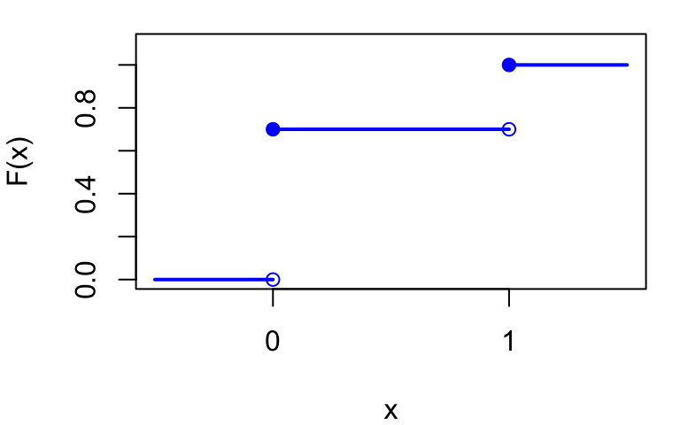
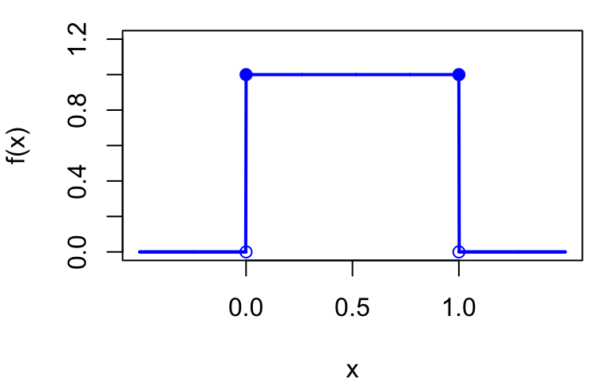
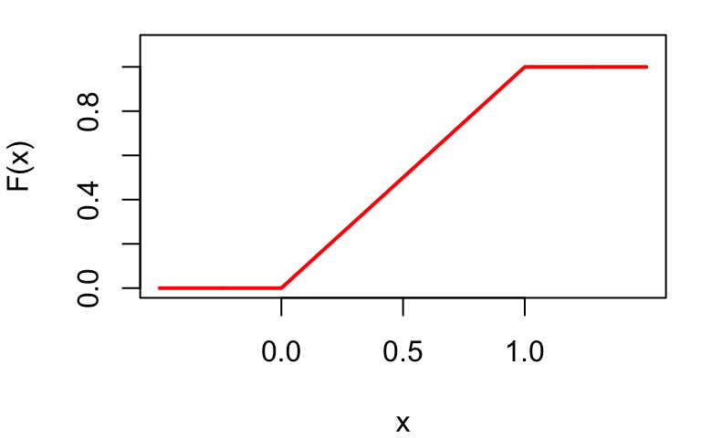

Lecture 2: Review of Probability
Economics 326 — Introduction to Econometrics II
Randomness
$
$
Random experiment: an experiment the outcome of which cannot be predicted with certainty, even if the experiment is repeated under the same conditions.
Event: a collection of outcomes of a random experiment.
Probability: a function from events to [0,1] interval.
- If \Omega is a collection of all possible outcomes, P(\Omega) = 1.
- If A is an event, P(A) \geq 0.
- If A_1, A_2, \ldots is a sequence of disjoint events, P(A_1 \text{ or } A_2 \text{ or } \ldots) = P(A_1) + P(A_2) + \ldots.
Random variable
Random variable: a numerical representation of a random experiment.
Coin-flipping example:
Outcome X Y Z Heads 0 1 -1 Tails 1 0 1 Rolling a dice
Outcome X Y 1 1 0 2 2 1 3 3 0 4 4 1 5 5 0 6 6 1
Summation operator
Let \{x_i: i = 1, \ldots, n\} be a sequence of numbers. \sum_{i=1}^{n} x_i = x_1 + x_2 + \ldots + x_n.
For a constant c: \sum_{i=1}^{n} c = nc. \sum_{i=1}^{n} cx_i = c(x_1 + x_2 + \ldots + x_n) = c\sum_{i=1}^{n} x_i.
Summation operator (continued)
Let \{y_i: i = 1, \ldots, n\} be another sequence of numbers, and a, b be two constants: \sum_{i=1}^{n}(ax_i + by_i) = a\sum_{i=1}^{n} x_i + b\sum_{i=1}^{n} y_i.
But: \sum_{i=1}^{n} x_i y_i \neq \sum_{i=1}^{n} x_i \sum_{i=1}^{n} y_i. \sum_{i=1}^{n} \frac{x_i}{y_i} \neq \frac{\sum_{i=1}^{n} x_i}{\sum_{i=1}^{n} y_i}. \sum_{i=1}^{n} x_i^2 \neq \left(\sum_{i=1}^{n} x_i\right)^2.
Discrete random variables
We often distinguish between discrete and continuous random variables.
A discrete random variable takes on only a finite or countably infinite number of values.
The distribution of a discrete random variable is a list of all possible values and the probability that each value would occur:
Value x_1 x_2 \ldots x_n Probability p_1 p_2 \ldots p_n Here p_i denotes the probability of a random variable X taking on value x_i: p_i = P(X = x_i) \text{ (Probability Mass Function (PMF)).} Each p_i is between 0 and 1, and \sum_{i=1}^{n} p_i = 1.
Example: Bernoulli distribution
Consider a single trial with two outcomes: “success” (with probability p) or “failure” (with probability 1-p).
Define the random variable: X = \begin{cases} 1 & \text{if success} \\ 0 & \text{if failure} \end{cases}
Then X follows a Bernoulli distribution: X \sim Bernoulli(p).
PMF: P(X = x) = p^x (1-p)^{1-x}, \quad x \in \{0, 1\}.
Discrete random variables (continued)
Indicator function: \mathbf{1}(x_i \leq x) = \begin{cases} 1 & \text{if } x_i \leq x \\ 0 & \text{if } x_i > x \end{cases}
Cumulative Distribution Function (CDF): F(x) = P(X \leq x) = \sum_i p_i \mathbf{1}(x_i \leq x).
F(x) is non-decreasing.
For discrete random variables, the CDF is a step function.
Example: CDF of Bernoulli(0.3)
F(x) = \begin{cases} 0 & \text{if } x < 0 \\ 1-p & \text{if } 0 \leq x < 1 \\ 1 & \text{if } x \geq 1 \end{cases}
Continuous random variable
A random variable is continuously distributed if the range of possible values it can take is uncountable infinite (for example, a real line).
A continuous random variable takes on any real value with zero probability.
For continuous random variables, the CDF is continuous and differentiable.
The derivative of the CDF is called the Probability Density Function (PDF): f(x) = \frac{dF(x)}{dx} \text{ and } F(x) = \int_{-\infty}^{x} f(u) du; \int_{-\infty}^{\infty} f(x) dx = 1.
Since F(x) is non-decreasing, f(x) \geq 0 for all x.
Example: Uniform distribution
A random variable X follows a Uniform distribution on [0, 1], written X \sim Uniform(0, 1), if it is equally likely to take any value in [0, 1].
PDF: f(x) = \begin{cases} 0 & \text{if } x < 0 \\ 1 & \text{if } 0 \leq x \leq 1 \\ 0 & \text{if } x > 1 \end{cases}
CDF: F(x) = \begin{cases} 0 & \text{if } x < 0 \\ x & \text{if } 0 \leq x \leq 1 \\ 1 & \text{if } x > 1 \end{cases}


Joint distribution (discrete)
Two random variables X, Y
y_1 y_2 \cdots y_m Marginal x_1 p_{11} p_{12} \cdots p_{1m} p_1^X=\sum_{j=1}^mp_{1j} x_2 p_{21} p_{22} \cdots p_{2m} p_2^X=\sum_{j=1}^mp_{2j} \vdots \vdots \vdots \vdots \vdots \vdots x_n p_{n1} p_{n2} \cdots p_{nm} p_n^X=\sum_{j=1}^mp_{nj} Joint PMF: p_{ij} = P(X = x_i, Y = y_j).
Marginal PMF: p_i^X = P(X = x_i) = \sum_{j=1}^{m} p_{ij}.
Conditional Distribution: If P(X = x_1) \neq 0, p_j^{Y|X=x_1} = P(Y = y_j | X = x_1) = \frac{P(Y = y_j, X = x_1)}{P(X = x_1)} = \frac{p_{1,j}}{p_1^X}
Joint distribution (continuous)
Joint PDF: f_{X,Y}(x, y) and \int_{-\infty}^{\infty} \int_{-\infty}^{\infty} f_{X,Y}(x, y) dx dy = 1.
Marginal PDF: f_X(x) = \int_{-\infty}^{\infty} f_{X,Y}(x, y) dy.
Conditional PDF: f_{Y|X=x}(y|x) = f_{X,Y}(x, y) / f_X(x).
Independence
Two (discrete) random variables are independent if for all x, y: P(X = x, Y = y) = P(X = x) P(Y = y).
If independent: P(Y = y | X = x) = \frac{P(X = x, Y = y)}{P(X = x)} = P(Y = y).
Two continuous random variables are independent if for all x, y: f_{X,Y}(x, y) = f_X(x) f_Y(y).
If independent, f_{Y|X}(y|x) = f_Y(y) for all x.
Expected value
Let g be some function: \mathrm{E}\left[g(X)\right] = \sum_i g(x_i) p_i \text{ (discrete).} \mathrm{E}\left[g(X)\right] = \int g(x) f(x) dx \text{ (continuous).} Expectation is a transformation of a distribution (PMF or PDF) and is a constant!
Mean (center of a distribution): \mathrm{E}\left[X\right] = \sum_i x_i p_i \text{ or } \mathrm{E}\left[X\right] = \int x f(x) dx.
Variance (spread of a distribution): \mathrm{Var}\left(X\right) = \mathrm{E}\left[(X - \mathrm{E}\left[X\right])^2\right] \mathrm{Var}\left(X\right) = \sum_i (x_i - \mathrm{E}\left[X\right])^2 p_i \text{ or } \mathrm{Var}\left(X\right) = \int (x - \mathrm{E}\left[X\right])^2 f(x) dx.
Standard deviation: \sqrt{\mathrm{Var}\left(X\right)}.
Properties
- Linearity:
- Discrete: \begin{align*} \mathrm{E}\left[a + bX\right] &= \sum_i (a + bx_i) p_i = a \sum_i p_i + b \sum_i x_i p_i \\ &= a + b\mathrm{E}\left[X\right]. \end{align*}
- Continuous: \begin{align*} \mathrm{E}\left[a + bX\right] &= \int (a + bx) f(x) dx = a\int f(x) dx + b\int x f(x) dx \\ &= a + b\mathrm{E}\left[X\right]. \end{align*}
- Re-centering: a random variable X - \mathrm{E}\left[X\right] has mean zero: \mathrm{E}\left[X - \mathrm{E}\left[X\right]\right] = \mathrm{E}\left[X\right] - \mathrm{E}\left[\mathrm{E}\left[X\right]\right] = \mathrm{E}\left[X\right] - \mathrm{E}\left[X\right] = 0.
Properties (continued)
Variance formula: \mathrm{Var}\left(X\right) = \mathrm{E}\left[X^2\right] - (\mathrm{E}\left[X\right])^2 \begin{align*} \mathrm{Var}\left(X\right) &= \mathrm{E}\left[(X - \mathrm{E}\left[X\right])^2\right] \\ &= \mathrm{E}\left[(X - \mathrm{E}\left[X\right])(X - \mathrm{E}\left[X\right])\right] \\ &= \mathrm{E}\left[(X - \mathrm{E}\left[X\right])X - (X - \mathrm{E}\left[X\right]) \cdot \mathrm{E}\left[X\right]\right] \\ &= \mathrm{E}\left[(X - \mathrm{E}\left[X\right])X\right] - \mathrm{E}\left[(X - \mathrm{E}\left[X\right]) \cdot \mathrm{E}\left[X\right]\right] \\ &= \mathrm{E}\left[X^2 - X \cdot \mathrm{E}\left[X\right]\right] - \mathrm{E}\left[X\right] \cdot \mathrm{E}\left[X - \mathrm{E}\left[X\right]\right] \\ &= \mathrm{E}\left[X^2\right] - \mathrm{E}\left[X\right] \cdot \mathrm{E}\left[X\right] - \mathrm{E}\left[X\right] \cdot 0\\ & = \mathrm{E}\left[X^2\right] - (\mathrm{E}\left[X\right])^2 \end{align*}
If \mathrm{E}\left[X\right] = 0 then \mathrm{Var}\left(X\right) = \mathrm{E}\left[X^2\right].
Properties (continued)
If c is a constant, \mathrm{E}\left[c\right] = c, and \mathrm{Var}\left(c\right) = \mathrm{E}\left[(c - \mathrm{E}\left[c\right])^2\right] = (c - c)^2 = 0.
\mathrm{Var}\left(a + bX\right) = b^2 \mathrm{Var}\left(X\right) \begin{align*} \mathrm{Var}\left(a + bX\right) &= \mathrm{E}\left[(a + bX) - \mathrm{E}\left[a + bX\right]\right]^2\\ & = \mathrm{E}\left[a + bX - a - b\mathrm{E}\left[X\right]\right]^2 \\ &= \mathrm{E}\left[bX - b\mathrm{E}\left[X\right]\right]^2 = \mathrm{E}\left[b^2(X - \mathrm{E}\left[X\right])^2\right] \\ &= b^2 \mathrm{E}\left[(X - \mathrm{E}\left[X\right])^2\right] \\ &= b^2 \mathrm{Var}\left(X\right). \end{align*}
Re-scaling: Let \mathrm{Var}\left(X\right) = \sigma^2, so the standard deviation is \sigma: \mathrm{Var}\left(\frac{X}{\sigma}\right) = \frac{1}{\sigma^2} \mathrm{Var}\left(X\right) = 1.
Example: Bernoulli distribution (continued)
Recall: X \sim Bernoulli(p) takes values \{0, 1\} with P(X=1) = p and P(X=0) = 1-p.
Mean: \mathrm{E}\left[X\right] = 0 \cdot (1-p) + 1 \cdot p = p.
Variance: \mathrm{E}\left[X^2\right] = 0^2 \cdot (1-p) + 1^2 \cdot p = p. \mathrm{Var}\left(X\right) = \mathrm{E}\left[X^2\right] - (\mathrm{E}\left[X\right])^2 = p - p^2 = p(1-p).
Example: Uniform distribution (continued)
Recall: X \sim Uniform(0, 1) has PDF f(x) = 1 for x \in [0, 1].
Mean: \mathrm{E}\left[X\right] = \int_0^1 x \cdot 1 \, dx = \left. \frac{x^2}{2} \right|_0^1 = \frac{1}{2}.
Variance: \mathrm{E}\left[X^2\right] = \int_0^1 x^2 \cdot 1 \, dx = \left. \frac{x^3}{3} \right|_0^1 = \frac{1}{3}. \mathrm{Var}\left(X\right) = \mathrm{E}\left[X^2\right] - (\mathrm{E}\left[X\right])^2 = \frac{1}{3} - \left(\frac{1}{2}\right)^2 = \frac{1}{3} - \frac{1}{4} = \frac{1}{12}.
Covariance
Covariance: Let X, Y be two random variables. \mathrm{Cov}\left(X, Y\right) = \mathrm{E}\left[(X - \mathrm{E}\left[X\right])(Y - \mathrm{E}\left[Y\right])\right]. \mathrm{Cov}\left(X, Y\right) = \sum_i \sum_j (x_i - \mathrm{E}\left[X\right])(y_j - \mathrm{E}\left[Y\right]) \cdot P(X = x_i, Y = y_j). \mathrm{Cov}\left(X, Y\right) = \int \int (x - \mathrm{E}\left[X\right])(y - \mathrm{E}\left[Y\right]) f_{X,Y}(x, y) dx dy.
\mathrm{Cov}\left(X, Y\right) = \mathrm{E}\left[XY\right] - \mathrm{E}\left[X\right] \mathrm{E}\left[Y\right]. \mathrm{Cov}\left(X, Y\right) = \mathrm{E}\left[(X - \mathrm{E}\left[X\right])(Y - \mathrm{E}\left[Y\right])\right] = \mathrm{E}\left[XY\right] - \mathrm{E}\left[X\right] \cdot \mathrm{E}\left[Y\right].
Properties of covariance
\mathrm{Cov}\left(X, c\right) = 0.
\mathrm{Cov}\left(X, X\right) = \mathrm{Var}\left(X\right).
\mathrm{Cov}\left(X, Y\right) = \mathrm{Cov}\left(Y, X\right).
\mathrm{Cov}\left(X, Y + Z\right) = \mathrm{Cov}\left(X, Y\right) + \mathrm{Cov}\left(X, Z\right).
\mathrm{Cov}\left(a_1 + b_1 X, a_2 + b_2 Y\right) = b_1 b_2 \mathrm{Cov}\left(X, Y\right).
If X and Y are independent then \mathrm{Cov}\left(X, Y\right) = 0.
\mathrm{Var}\left(X \pm Y\right) = \mathrm{Var}\left(X\right) + \mathrm{Var}\left(Y\right) \pm 2\mathrm{Cov}\left(X, Y\right).
Correlation
Correlation coefficient: \mathrm{Corr}(X, Y) = \frac{\mathrm{Cov}\left(X, Y\right)}{\sqrt{\mathrm{Var}\left(X\right) \mathrm{Var}\left(Y\right)}}.
Cauchy-Schwartz inequality: |\mathrm{Cov}\left(X, Y\right)| \leq \sqrt{\mathrm{Var}\left(X\right) \mathrm{Var}\left(Y\right)} and therefore -1 \leq \mathrm{Corr}(X, Y) \leq 1.
\mathrm{Corr}(X, Y) = \pm 1 \Leftrightarrow Y = a + bX.
Conditional expectation
Suppose you know that X = x. You can update your expectation of Y by conditional expectation: \mathrm{E}\left[Y | X = x\right] = \sum_i y_i P(Y = y_i | X = x) \text{ (discrete)} \mathrm{E}\left[Y | X = x\right] = \int y f_{Y|X}(y|x) dy \text{ (continuous).}
\mathrm{E}\left[Y | X = x\right] is a constant.
\mathrm{E}\left[Y | X\right] is a function of X and is a random variable and a function of X (Uncertainty about X has not been realized yet): \mathrm{E}\left[Y | X\right] = \sum_i y_i P(Y = y_i | X) = g(X) \mathrm{E}\left[Y | X\right] = \int y f_{Y|X}(y|X) dy = g(X), for some function g that depends on PMF (PDF).
Properties of conditional expectation
Conditional expectations satisfies all properties of unconditional expectation.
Once you condition on X, you can treat any function of X as a constant: \mathrm{E}\left[h_1(X) + h_2(X) Y | X\right] = h_1(X) + h_2(X) \mathrm{E}\left[Y | X\right], for any functions h_1 and h_2.
Law of Iterated Expectation (LIE): \mathrm{E}\left[\mathrm{E}\left[Y | X\right]\right] = \mathrm{E}\left[Y\right], \mathrm{E}\left[\mathrm{E}\left[Y | X, Z\right] | X\right] = \mathrm{E}\left[Y | X\right].
Conditional variance: \mathrm{Var}\left(Y | X\right) = \mathrm{E}\left[(Y - \mathrm{E}\left[Y | X\right])^2 | X\right].
Mean independence: \mathrm{E}\left[Y | X\right] = \mathrm{E}\left[Y\right] = \text{constant.}
Example: conditional expectation and LIE
- Joint PMF of X \in \{0, 1\} and Y \in \{1, 2, 3\}:
| Y=1 | Y=2 | Y=3 | P(X=x) | |
|---|---|---|---|---|
| X=0 | \tfrac{1}{10} | \tfrac{2}{10} | \tfrac{2}{10} | \tfrac{1}{2} |
| X=1 | \tfrac{2}{10} | \tfrac{2}{10} | \tfrac{1}{10} | \tfrac{1}{2} |
| P(Y=y) | \tfrac{3}{10} | \tfrac{4}{10} | \tfrac{3}{10} |
Conditional PMFs (divide joint probabilities by marginal of X): P(Y=y | X=0): \quad \tfrac{1/10}{1/2},\ \tfrac{2/10}{1/2},\ \tfrac{2/10}{1/2} = \tfrac{1}{5},\ \tfrac{2}{5},\ \tfrac{2}{5} P(Y=y | X=1): \quad \tfrac{2/10}{1/2},\ \tfrac{2/10}{1/2},\ \tfrac{1/10}{1/2} = \tfrac{2}{5},\ \tfrac{2}{5},\ \tfrac{1}{5}
X and Y are not independent since the conditional PMFs of Y given X=x are different for x=0 and x=1.
Conditional expectations: \mathrm{E}\left[Y \mid X=x\right]=\sum_{j=1}^{3} y_{j} P\left(Y=y_{j} \mid X=x\right) \mathrm{E}\left[Y | X=0\right] = 1 \cdot \tfrac{1}{5} + 2 \cdot \tfrac{2}{5} + 3 \cdot \tfrac{2}{5} = \tfrac{1+4+6}{5} = \tfrac{11}{5} \mathrm{E}\left[Y | X=1\right] = 1 \cdot \tfrac{2}{5} + 2 \cdot \tfrac{2}{5} + 3 \cdot \tfrac{1}{5} = \tfrac{2+4+3}{5} = \tfrac{9}{5}
LIE check: \mathrm{E}\left[\mathrm{E}\left[Y|X\right]\right] = \frac{11}{5} \cdot \frac{1}{2} + \frac{9}{5} \cdot \frac{1}{2} = \frac{11}{10} + \frac{9}{10} = 2
Direct: \mathrm{E}\left[Y\right] = 1 \cdot \frac{3}{10} + 2 \cdot \frac{4}{10} + 3 \cdot \frac{3}{10} = \frac{3+8+9}{10} = 2 ✓
Proof of the Law of Iterated Expectations
- Let X take values x_1, \ldots, x_n and Y take values y_1, \ldots, y_m.
\displaystyle \mathrm{E}\left[\mathrm{E}\left[Y | X\right]\right] = \sum_{i=1}^{n} \mathrm{E}\left[Y | X = x_i\right]\, P(X = x_i)
\displaystyle = \sum_{i=1}^{n} \left(\sum_{j=1}^{m} y_j\, P(Y = y_j | X = x_i)\right) P(X = x_i)
\displaystyle = \sum_{i=1}^{n} \sum_{j=1}^{m} y_j\, P(Y = y_j | X = x_i)\, P(X = x_i)
\displaystyle = \sum_{j=1}^{m} y_j \sum_{i=1}^{n} P(Y = y_j,\, X = x_i)
\displaystyle = \sum_{j=1}^{m} y_j\, P(Y = y_j) = \mathrm{E}\left[Y\right]
- Key steps:
- P(Y = y_j | X = x_i) \cdot P(X = x_i) = P(Y = y_j,\, X = x_i).
- Changing the order of summation.
- Summing over i gives marginal P(Y = y_j).
Relationship between different concepts of independence
\begin{array}{c} X \text{ and } Y \text{ are independent} \\ \Downarrow \\ \mathrm{E}\left[Y | X\right] = \text{constant (mean independence)} \\ \Downarrow \\ \mathrm{Cov}\left(X, Y\right) = 0 \text{ (uncorrelatedness)} \end{array}
Normal distribution
A normal rv is a continuous rv that can take on any value. The PDF of a normal rv X is f(x) = \frac{1}{\sqrt{2\pi\sigma^2}} \exp\left(-\frac{(x - \mu)^2}{2\sigma^2}\right), \text{ where} \mu = \mathrm{E}\left[X\right] \text{ and } \sigma^2 = \mathrm{Var}\left(X\right). We usually write X \sim N(\mu, \sigma^2).
If X \sim N(\mu, \sigma^2), then a + bX \sim N(a + b\mu, b^2\sigma^2).
Standard Normal distribution
Standard Normal rv has \mu = 0 and \sigma^2 = 1. Its PDF is \phi(z) = \frac{1}{\sqrt{2\pi}} \exp\left(-\frac{z^2}{2}\right).
Symmetric around zero (mean): if Z \sim N(0, 1), P(Z > z) = P(Z < -z).
Thin tails: P(-1.96 \leq Z \leq 1.96) = 0.95.
If X \sim N(\mu, \sigma^2), then (X - \mu)/\sigma \sim N(0, 1).
Bivariate Normal distribution
X and Y have a bivariate normal distribution if their joint PDF is given by: f(x, y) = \frac{1}{2\pi\sqrt{(1-\rho)^2 \sigma_X^2 \sigma_Y^2}} \exp\left[-\frac{Q}{2(1-\rho)^2}\right], where Q = \frac{(x-\mu_X)^2}{\sigma_X^2} + \frac{(y-\mu_Y)^2}{\sigma_Y^2} - 2\rho\frac{(x-\mu_X)(y-\mu_Y)}{\sigma_X\sigma_Y},
\mu_X = \mathrm{E}\left[X\right], \mu_Y = \mathrm{E}\left[Y\right], \sigma_X^2 = \mathrm{Var}\left(X\right), \sigma_Y^2 = \mathrm{Var}\left(Y\right), and \rho = \mathrm{Corr}(X, Y).
Properties of Bivariate Normal distribution
If X and Y have a bivariate normal distribution:
a + bX + cY \sim N(\mu^*, (\sigma^*)^2), where \mu^* = a + b\mu_X + c\mu_Y, \quad (\sigma^*)^2 = b^2\sigma_X^2 + c^2\sigma_Y^2 + 2bc\rho\sigma_X\sigma_Y.
\mathrm{Cov}\left(X, Y\right) = 0 \Longrightarrow X and Y are independent.
\mathrm{E}\left[Y | X\right] = \mu_Y + \frac{\mathrm{Cov}\left(X, Y\right)}{\sigma_X^2}(X - \mu_X).
Can be generalized to more than 2 variables (multivariate normal).
Appendix: The Cauchy-Schwartz Inequality
Claim: |\mathrm{Cov}\left(X, Y\right)| \leq \sqrt{\mathrm{Var}\left(X\right) \mathrm{Var}\left(Y\right)}.
Proof: Define U = Y - \beta X, where \beta = \frac{\mathrm{Cov}\left(X, Y\right)}{\mathrm{Var}\left(X\right)},
- Note that \beta is a constant!
- Also note the connection to regression and OLS in the definition of \beta.
Since variances are always non-negative:
\begin{alignat*}{2} 0 & \leq \mathrm{Var}\left(U\right) &&\\ & = \mathrm{Var}\left(Y - \beta X\right) &&\quad (\text{def. of } U)\\ & = \mathrm{Var}\left(Y\right) + \mathrm{Var}\left(\beta X\right) - 2\mathrm{Cov}\left(Y, \beta X\right) &&\quad (\text{prop. of var.})\\ & = \mathrm{Var}\left(Y\right) + \beta^2 \mathrm{Var}\left(X\right) - 2\beta \mathrm{Cov}\left(X, Y\right) &&\quad (\text{prop. of var., cov.})\\ & = \mathrm{Var}\left(Y\right) + \underbrace{\left(\frac{\mathrm{Cov}\left(X, Y\right)}{\mathrm{Var}\left(X\right)}\right)^2}_{=\beta^2} \mathrm{Var}\left(X\right) &&\\ & \qquad - 2 \underbrace{\left(\frac{\mathrm{Cov}\left(X, Y\right)}{\mathrm{Var}\left(X\right)} \right)}_{=\beta}\mathrm{Cov}\left(X, Y\right) &&\quad (\text{def. of } \beta)\\ & = \mathrm{Var}\left(Y\right) + \frac{\mathrm{Cov}\left(X, Y\right)^2}{\mathrm{Var}\left(X\right)} - 2 \frac{\mathrm{Cov}\left(X, Y\right)^2}{\mathrm{Var}\left(X\right)} &&\\ & = \mathrm{Var}\left(Y\right) - \frac{\mathrm{Cov}\left(X, Y\right)^2}{\mathrm{Var}\left(X\right)}. && \end{alignat*}
- Rearranging: \mathrm{Cov}\left(X, Y\right)^2 \leq \mathrm{Var}\left(X\right) \mathrm{Var}\left(Y\right)
- or |\mathrm{Cov}\left(X, Y\right)| \leq \sqrt{\mathrm{Var}\left(X\right) \mathrm{Var}\left(Y\right)}.